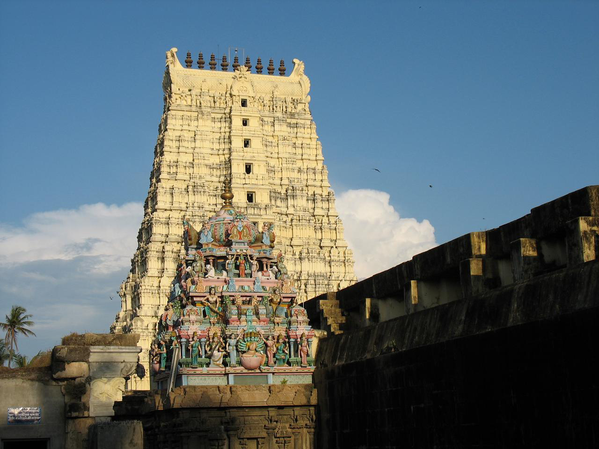
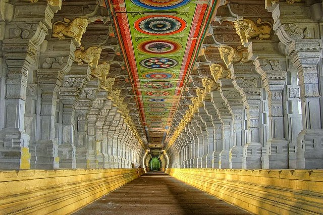
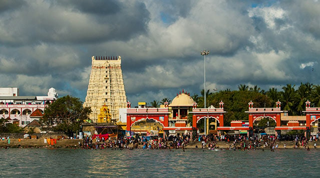
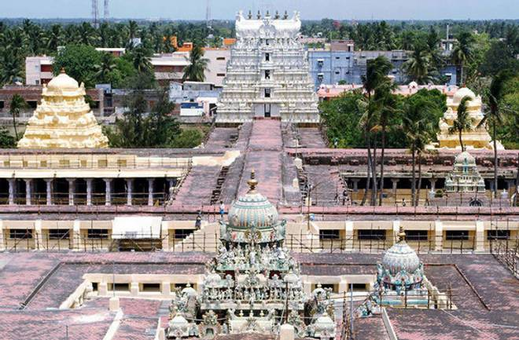
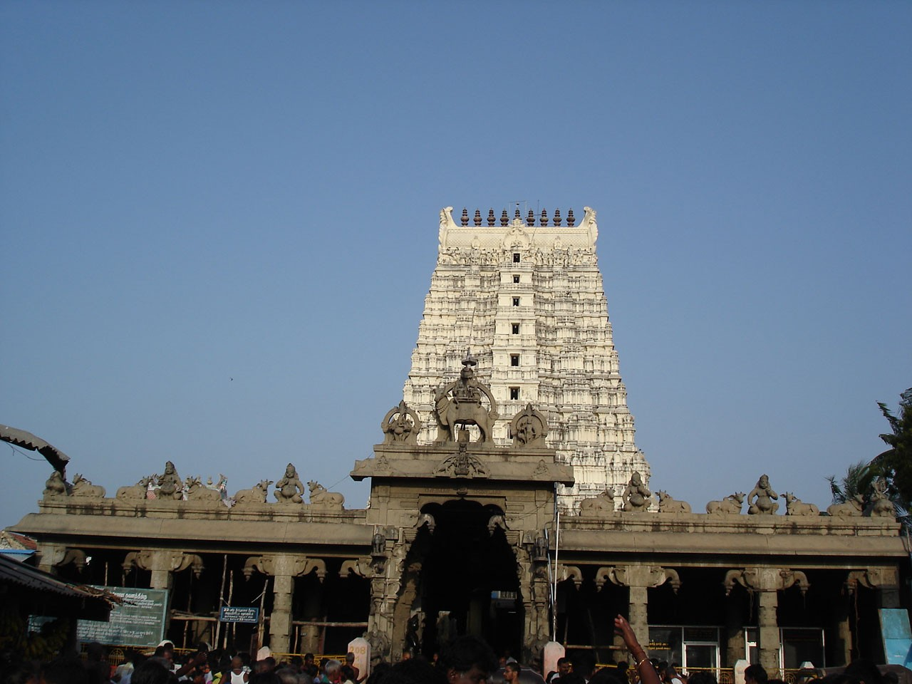
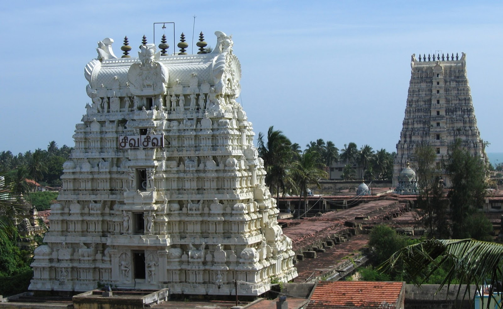

Ramanathaswamy Temple
Rameswaram – Sacred Jyotirlinga of Lord Shiva
Overview
The Ramanathaswamy Temple, situated on the serene island of Rameswaram in Tamil Nadu, is one of the most sacred Hindu temples dedicated to Lord Shiva. It holds immense spiritual significance as one of the twelve Jyotirlingas and is also revered as a Char Dham pilgrimage site. The temple stands as a divine bridge between Shaivism and Vaishnavism, deeply rooted in the Ramayana and the spiritual heritage of Bharath.
Sthala Purana & Ramayana Connection
According to the Sthala Purana, Lord Rama worshipped Lord Shiva here to absolve himself of the sin of killing Ravana, a Brahmin king. A Shiva Lingam was installed and worshipped by Lord Rama himself, making this temple uniquely connected to the Ramayana. It is believed that the sacred Ram Setu (Adam’s Bridge) was built from Rameswaram to Lanka, further enhancing the temple’s spiritual importance.
Jyotirlinga Significance
Ramanathaswamy Temple houses one of the twelve Jyotirlingas, representing the infinite form of Lord Shiva. What makes this Jyotirlinga unique is its strong association with Lord Rama, making it one of the rare temples equally sacred to both Shaivites and Vaishnavites. Worship at this Jyotirlinga is believed to grant liberation from sins and lead devotees toward spiritual enlightenment.
Theerthams & Agni Theertham
One of the most distinctive features of the Ramanathaswamy Temple is the presence of 22 sacred theerthams (holy water wells) within the temple complex. Devotees traditionally take a ritual bath in these theerthams before darshan, as it is believed to cleanse sins and purify the soul. The Agni Theertham, located at the seashore opposite the temple, is considered especially sacred, where devotees perform holy sea baths before entering the temple premises.
History & Architecture
The temple has a long and illustrious history, with contributions from the Pandya, Chola, Jaffna kings, and later the Sethupathi rulers of Ramanathapuram. The most remarkable architectural feature is the temple’s corridors, which are among the longest in the world, adorned with beautifully carved pillars reflecting the grandeur of Dravidian architecture.
Festivals
Major festivals celebrated here include Maha Shivaratri, Thirukalyanam, Navaratri, and Mahalaya Amavasya. During these occasions, the temple witnesses massive gatherings of devotees from across the country, creating an atmosphere of deep devotion and spiritual energy.
Temple Timings
The temple is generally open from early morning to night, with special poojas conducted
throughout the day. Timings may vary during festivals and special occasions.
Morning: 5:00 AM – 1:00 PM
Evening: 3:00 PM – 9:00 PM
Temple Gallery






Official Information & Contact
For official updates, darshan details, and announcements, devotees may visit the official website of the Ramanathaswamy Temple.
🌐 Official Website:
https://rameswaramramanathar.hrce.tn.gov.in
📞 Temple Contact:
+91 4573 221223
📧 Email:
rameswaram@tnhrce.gov.in
Temple Location
Ramanathaswamy Temple is located in Rameswaram, Tamil Nadu, and is accessible by road, rail, and nearby airports.
📍 Get Directions to Temple